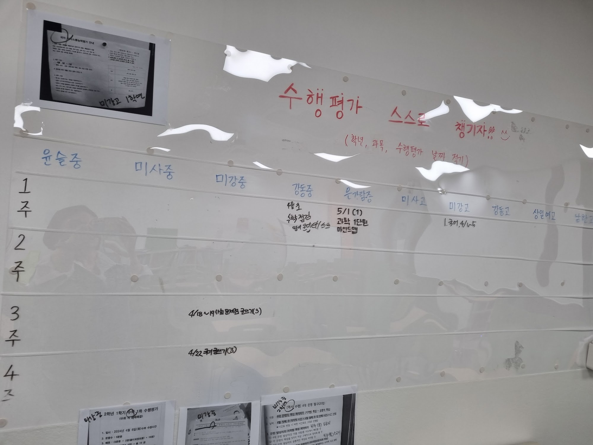
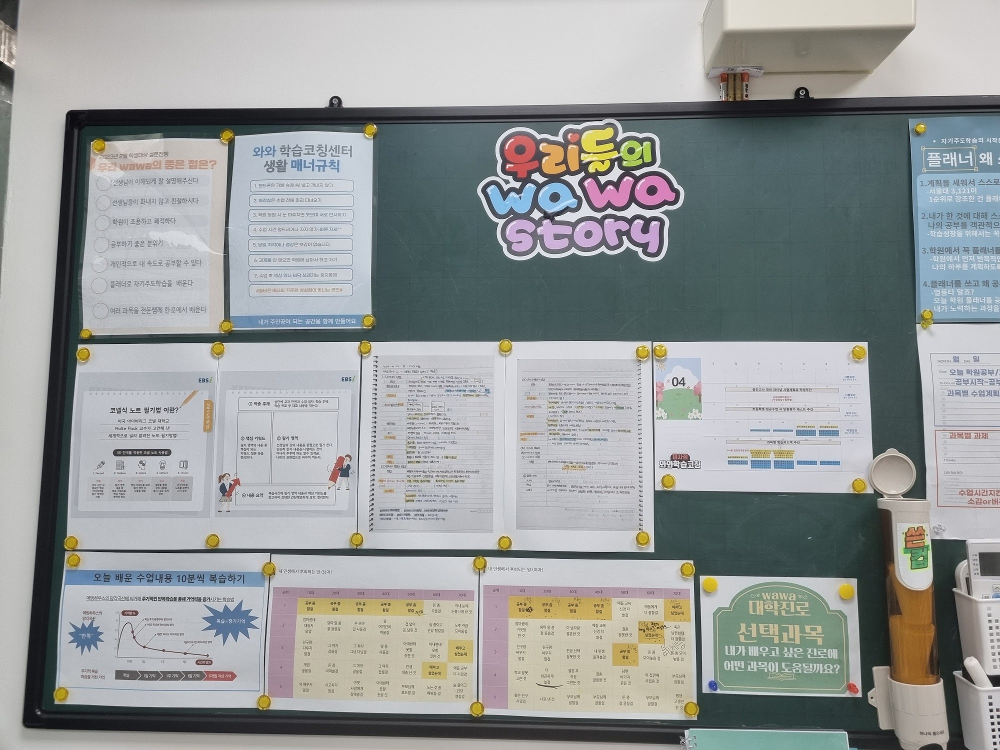
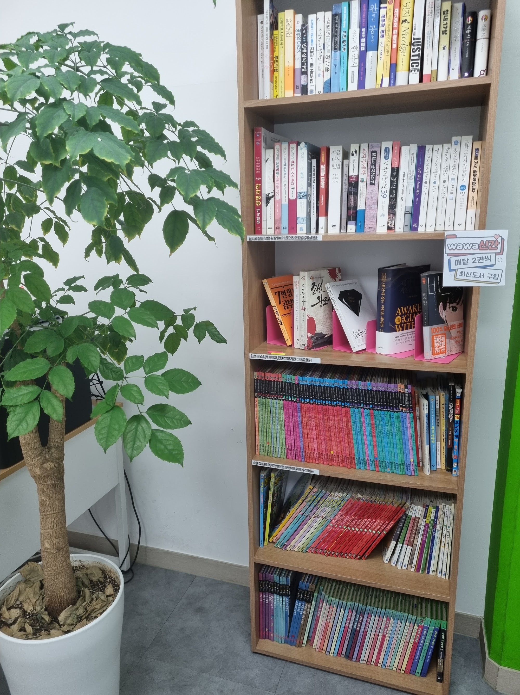

안녕하세요, 경기도 하남시 미사강변도시의 와와학습코칭 미사점입니다. 미사강변대로에 면한 센터로, 미사초등학교(미사초)·미사강변초등학교(미사강변초)·윤슬초등학교(윤슬초)·망월초등학교(망월초) 아이들이 하교하며 지나는 자리에 있습니다.
오늘은 저희 벽 한 면을 그대로 보여 드리면서 시작하겠습니다. 위 사진이 미사점 벽입니다. 학원 홍보물도, 합격 현수막도 아닙니다. 수행평가 일정판입니다.
세로는 학교, 가로는 몇째 주
판을 읽는 법은 간단합니다. 세로 칸은 학교 이름입니다. 윤슬중학교(윤슬중)·미사중학교(미사중)·은가람중학교(은가람중)가 있고, 옆으로 미사고등학교(미사고)·남한고등학교(남한고)가 이어집니다. 하남 미사강변도시는 서울 강동구와 맞닿아 있어 강동중학교·강동고등학교·상일여자고등학교에 다니는 아이들도 함께 옵니다. 그래서 판에는 하남 학교와 서울 학교가 나란히 적혀 있습니다.
가로 칸은 1주·2주·3주·4주입니다. 칸 안에는 아이들이 직접 적은 글씨가 들어갑니다. 과학 1단원 마인드맵, 사회 문제점 글쓰기, 수학 점검, 영어 원어민 스피킹 같은 말과 날짜가 함께 있습니다.
판 맨 위에 빨간 글씨로 적힌 문장이 이 벽의 전부입니다. 수행평가 스스로 챙기자 — 학년, 과목, 수행평가 날짜 적기.
선생님이 대신 적어 주지 않습니다. 아이가 학교에서 안내받은 것을 자기 손으로 옮겨 적습니다. 그 몇 초가 이 판의 목적입니다.
왜 이걸 벽에 붙여 놓았을까요
상담에서 이런 말씀을 자주 듣습니다. 시험은 나름 준비했는데 성적표는 그대로예요.
중학교와 고등학교 내신은 지필고사만으로 정해지지 않습니다. 과목에 따라 수행평가가 함께 반영되고, 그 비중은 학교와 과목마다 다릅니다. 정확한 비율은 학교별 평가계획에 나와 있으니 저희가 임의로 말씀드리지 않겠습니다. 다만 현장에서 분명한 것이 하나 있습니다. 아이들이 놓치는 점수는 시험지보다 수행평가 쪽에 훨씬 많습니다.
이유는 실력이 아닙니다. 구조입니다.
- 안내가 한 번에 몰리지 않습니다 — 지필고사는 날짜가 한 번에 공지됩니다. 수행평가는 과목별로, 수업 시간마다, 따로 안내됩니다. 아이 머릿속에 모아질 자리가 없습니다.
- 기한이 제각각입니다 — 어떤 과목은 다음 주까지, 어떤 과목은 한 달 뒤입니다. 급한 것부터 처리하다 보면 멀리 있는 것을 놓칩니다.
- 한 번 놓치면 만회할 수 없습니다 — 지필고사는 다음 회차가 있지만 수행평가는 그날이 지나면 끝입니다. 아이가 억울해하는 대부분이 이 경우입니다.
그래서 벽에 붙여 두는 것입니다. 머리 밖에, 눈에 보이는 곳에, 지나다니면서 고개만 들면 보이는 높이에 두는 것이 이 판이 하는 일의 전부입니다.
같은 학년이라도 학교가 다르면 다릅니다
판을 학교별로 나눈 데는 이유가 있습니다. 같은 중학교 2학년이라도 학교가 다르면 수행평가 주제도, 시기도, 방식도 다릅니다. 어느 학교는 글쓰기로 내고, 어느 학교는 발표로 냅니다. 어느 학교는 수업 시간 안에 끝내고, 어느 학교는 집에서 준비해 오게 합니다.
이것을 중2 국어로 뭉뚱그리면 관리가 안 됩니다. 아이가 친구 말을 듣고 우리도 그거 하나 보다 하고 준비했다가, 정작 자기 학교는 다른 것을 냈던 일이 매년 있습니다.
미사점처럼 여러 학교 아이가 섞이는 동네에서는 학교 칸을 나누는 것 자체가 관리입니다. 자기 학교 줄만 보면 되니까 아이도 헷갈리지 않습니다.

필기하는 법부터 붙여 둡니다
수행평가 일정판 옆에는 게시판이 있습니다. 위 사진입니다. 여기에는 결과가 아니라 방법이 붙어 있습니다.
가운데에는 코넬식 노트 필기법 안내가 있습니다. 노트를 나눠 한쪽에 핵심 키워드, 다른 쪽에 수업 내용, 아래에 요약을 적는 방식입니다. 그 옆에는 아이들이 실제로 그렇게 쓴 노트가 붙어 있습니다. 설명만 붙여 놓으면 아이들이 잘 안 봅니다. 또래가 쓴 실물이 옆에 있어야 따라 합니다.
아래쪽에는 오늘 배운 수업내용 10분씩 복습하기 안내가 있습니다. 시간이 지나면서 기억이 어떻게 줄어드는지를 그린 곡선과, 학습 직후·1일 뒤·1주 뒤·1달 뒤로 이어지는 반복 주기가 함께 그려져 있습니다. 아이들에게 복습하라는 말은 잘 안 통합니다. 그런데 10분이라고 숫자가 붙으면 해 봅니다. 10분은 해 볼 만해 보이기 때문입니다.
왼쪽에는 생활 매너규칙이 붙어 있습니다. 휴대폰은 가방에 넣기, 수업 전에 화장실 다녀오기, 마주치면 인사하기 같은 일곱 줄입니다. 공부와 상관없어 보이지만, 자습 공간에서 집중을 흔드는 것 대부분은 이런 사소한 것들입니다.

책장을 자습 공간 한쪽에 둔 이유
센터 한쪽에는 이런 책장이 있습니다. 위 칸에는 공부법·진로 관련 책이, 가운데에는 청소년 소설과 교양서가, 아래 두 칸에는 학습만화가 색깔별로 꽂혀 있습니다. 옆에 붙은 안내판에는 wawa신간 — 매달 2권씩 최신도서 구입이라고 적혀 있고, 빌리고 싶은 책은 물어보면 대여할 수 있다는 안내가 함께 있습니다.
학원에 학습만화를 두는 것을 의아해하시는 분들이 계십니다. 저희 생각은 이렇습니다.
수행평가에서 글쓰기와 발표가 차지하는 자리가 커지고 서술형 문항이 길어지면서, 문제를 읽어 내는 힘이 점수와 직접 연결됩니다. 문제를 못 푸는 게 아니라 문제가 무엇을 묻는지 파악을 못 해서 틀리는 아이가 정말 많습니다.
그 힘은 문제집으로 안 늘어납니다. 글을 읽는 절대량이 있어야 늘고, 그 양은 재미있어서 읽는 시간에서 나옵니다. 그래서 학습만화부터 두었습니다. 아래 칸에서 시작해 가운데 칸으로 올라가는 아이를 여럿 봤습니다. 순서를 건너뛰라고 하면 대개 아무 칸도 안 읽습니다.
집에서 오늘부터 해 보실 수 있는 것
- 수행평가를 한 곳에 모아 적게 하세요 — 공책 한 장, 냉장고 메모, 무엇이든 좋습니다. 중요한 건 흩어진 것을 한 자리에 모으는 것입니다. 과목·내용·날짜 세 가지면 충분합니다.
- 아이가 직접 적게 하세요 — 부모님이 대신 적어 주면 아이 기억에 남지 않습니다. 적는 행위 자체가 내 일이라는 표시입니다.
- 이번 주에 내는 거 뭐 있어 — 주 1회만 물어보세요 — 잘하고 있느냐고 묻지 않아도 됩니다. 이 질문 하나가 매주 한 번 아이 머릿속을 정리시켜 줍니다.
- 학교 평가계획을 한 번 열어 보세요 — 대부분의 학교가 학기 초에 과목별 평가 방법과 반영 비율을 안내합니다. 어떤 과목에서 수행평가 비중이 큰지 한 번만 확인해 두시면, 아이에게 어디에 힘을 쓰라고 할지 정할 수 있습니다.
미사점 찾아오시는 길
와와학습코칭 미사점은 경기도 하남시 미사강변대로 212, 미사센트럴프라자 309호에 있습니다. 미사초등학교·미사강변초등학교·윤슬초등학교·망월초등학교와 윤슬중학교·미사중학교·은가람중학교 학생들이 오가기 좋은 자리입니다.
학습 진단과 상담은 무료입니다. 오실 때 아이가 학교에서 받아 온 안내장이나 평가계획을 함께 가져오시면, 이번 학기에 어디를 먼저 챙겨야 할지부터 같이 짚어 드릴 수 있습니다.